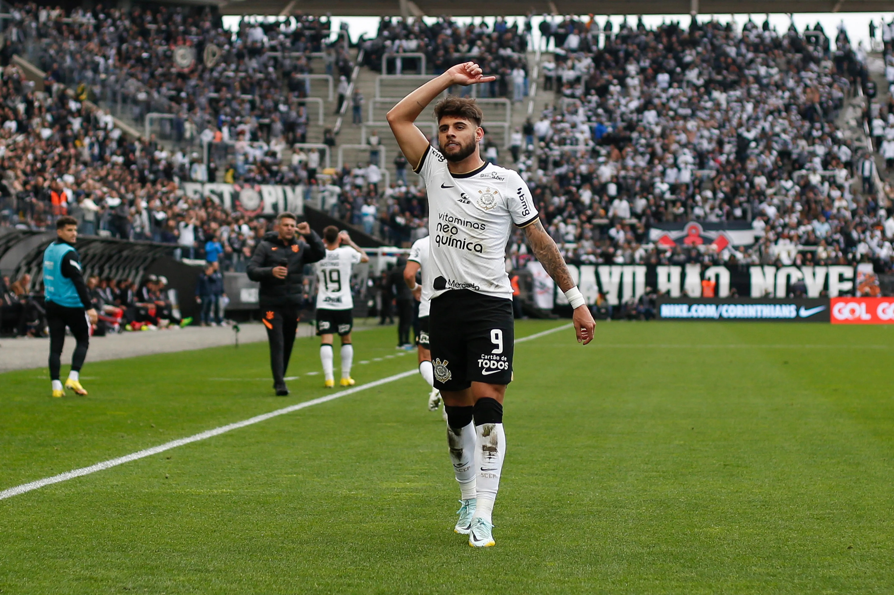
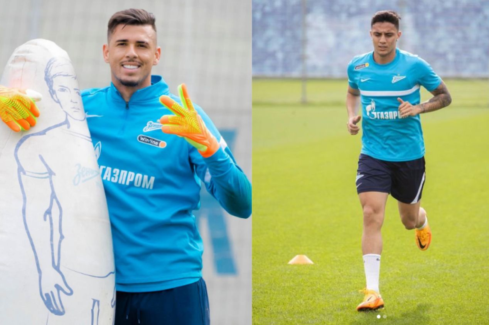

Clique Aqui para voltar
Clique Aqui para voltar
Fim da novela!
Corinthians assina com Yuri Alberto até o fim de 2027
Durante as últimas semanas surgiram rumores de que o Zenit queria o atleta de volta para compor seu elenco para a temporada do clube russo. Porém, o Timão, que tinha o jogador por empréstimo, decidiu tentar adquirir o jogador em definitivo para reforçar o elenco alvinegro. Após um longo período de negociação conturbado, o clube brasileiro e o russo entraram em um acordo: O pagamento do passe do jogador será feito por meio de uma troca de jogadores, sendo envolvidos: Robert Renan, que vai já no início dessa temporada e Du Queiroz, que irá um junho.
 Já os atletas Gustavo Mantuan e Ivan Quaresma que estavam emprestados ao clube russo retornam em junho e em janeiro de 2023, respectivamente. O destino do goleiro é ser emprestado ao Vasco da Gama. Já no caso de Mantuan, deve ser mantido no elenco para reforçar o clube na disputa dos campeonatos que terá durante o ano.
Escrito por Gian Fachini, 18/01